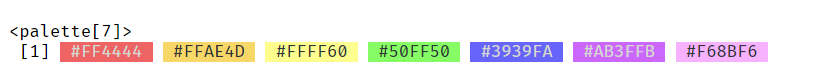
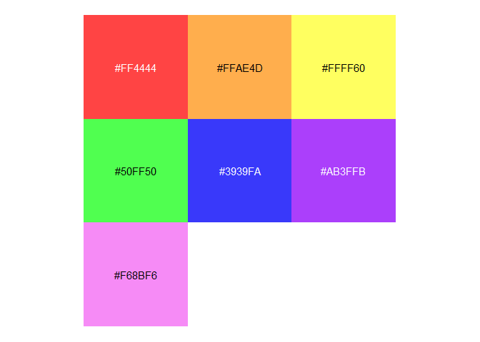
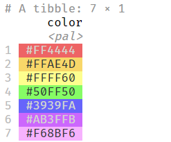

palette provides a lightweight infrastructure for working with color palettes in R. The primary goal is to place colors directly next to their character representations. To do this, we create a palette class based on vctrs. We then provide methods for this class, including print(), plot(), and pillar. To keep it lightweight and usable in other packages, the only direct dependencies are vctrs, cli, and pillar.
Installation
You can install the development version of palette from GitHub with:
# install.packages('pak')
pak::pak('christopherkenny/palette')Using palette
palette primarily provides a palette vctrs class. Using included data, roygbiv, a length 7 vector of hex codes, we can create a palette.
library(palette)
#>
#> Attaching package: 'palette'
#> The following object is masked from 'package:grDevices':
#>
#> palette
palette(roygbiv)
There is also a plot() method for visualizing the colors:

For use within tibbles, there is a pillar_shaft method:
